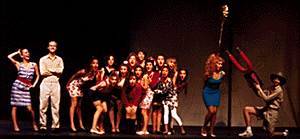
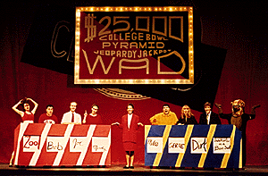

Full Frontal Gaieties Photos
Full Frontal Gaieties Photos
Full Frontal Gaieties Photos
Full Frontal Gaieties Photos
Gaieties '91 was the most recent "plotless" Gaieties, although it included a "Quadfather" skit which spanned two scenes. It boasted a cast of forty-two and sold out two of three shows. Of course, those were the days when the football team actually won most of the time...
 Despite the fact that Gaieties' vocal director was a Pi Phi herself, the scene to the left was credited in the program as "Wild Kingdom: Pi Phi's in the Mist." Here Marlin Perkins (Dan Goldman '94, '95) and Jane Goodall (Tina VanBerckelaer '94) illustrate the social characteristics of the Pi Phis while faithful assistant Jim (Steve Sherman '95) tags one (Jen Kramer '94) with a subtle and sophisticated tracking device.
 On the right, Cal squares off against Stanford in the $25,000 College Bowl Pyramid Jeopardy Jackpot Wad. Batting for the Cardinal are Dana Plato, aka Zool (Melissa Wilson '94), Bob Confucius (José "Paco" Farias '94), Bob Copernicus (Dan Goldman '94), and Mindy Einstein (Jen Kramer '94). On the blue and gold team are Miles McWeenie (Alan Arnaudy '93), Gertie McWeenie (Jerusha Detweiler '95), Dirk McWeenie (Sean May '93), and Asshole in a Bear Suit (uncredited: Scott Roos '95).